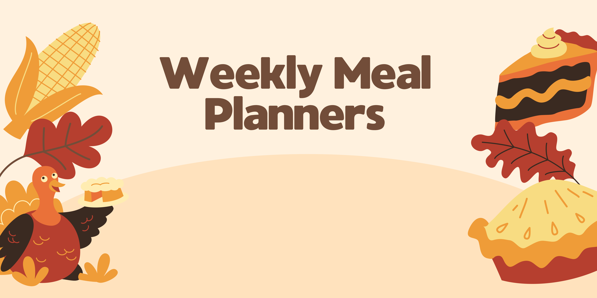

Meal Planning Tips and Kitchen Hacks

Tip 1: Create a Weekly Meal Plan
Plan your family's meals for the week ahead. It saves time and reduces stress.
For more information, check out this article.

Tip 2: Prep Ingredients in Advance
Chop vegetables and prepare ingredients in advance to streamline cooking during the week.
Learn more with this resource.

Tip 3: Teach Good Habits
Healthy eating habits are more likely to stay with you if you learn them as a child. That’s why it’s important that you teach your children good habits now.
Learn more with this resource.
| Tips | Details |
|---|---|
| Tip 1: Plan your meals for the week ahead. | Planning your meals for the week in advance can help you save time and reduce the stress of deciding what to cook every day. You can create a meal plan, make a shopping list, and have everything ready for the week |
| Tip 2: Prep ingredients in advance for efficient cooking. | Prepping ingredients in advance involves tasks like chopping vegetables, marinating meat, or portioning out ingredients. This can make cooking during the week much more efficient and save you time. |
| Tip 3: Teach the kids good eating habits. | Teaching your children good eating habits is essential for their health and well-being. It involves educating them about balanced nutrition, portion control, and making healthy food choices. Setting a good example and involving them in meal preparation can also help instill these habits. |